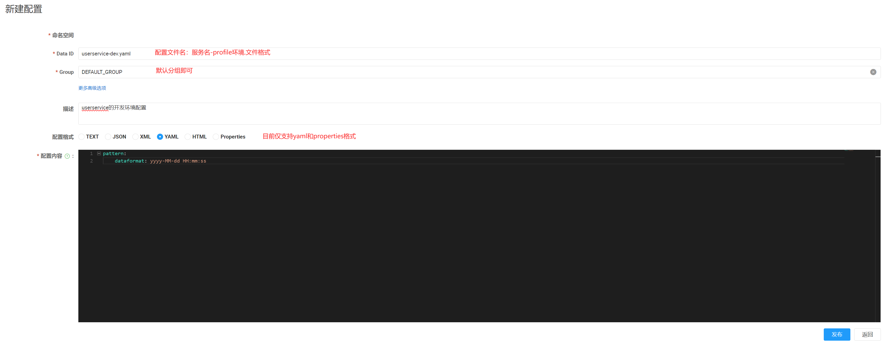
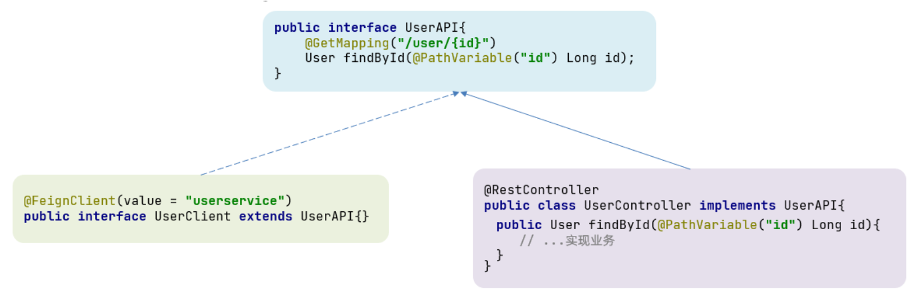
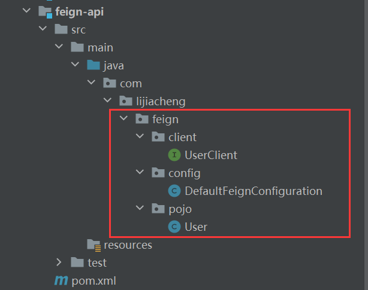
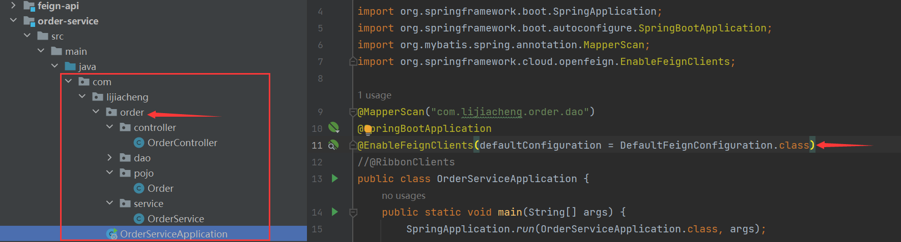
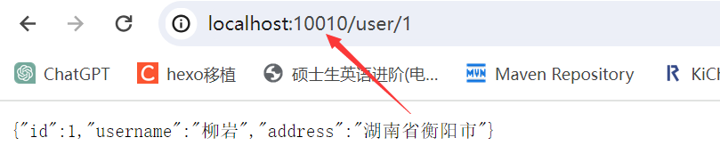
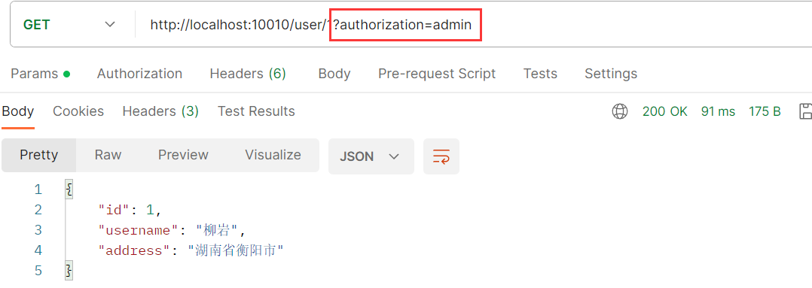

springcloud入门笔记。
1、Nacos配置管理
Nacos除了可以做注册中心，还可以进行配置管理。
统一配置管理
当微服务部署的实例越来越多时，逐个修改微服务实例的配置太过繁琐，所以我们需要一种统一配置管理的方案，可以集中管理所有实例的配置。

Nacos一方面可以做配置的集中管理，另一方面可以在配置变更时及时通知微服务进行配置的热更新。
在nacos中添加配置文件

在弹出的表单中填写配置信息：

项目的核心配置，需要热更新的配置才有放到nacos配置中心管理的必要；基本不会变更的基础配置还是要保存在微服务本地。
从微服务中拉取配置
微服务需要拉取nacos中管理的配置，并且与本地application配置文件中的配置合并，才能完成项目的启动。
从微服务拉取配置我们需要先访问nacos再读取本地配置，但是nacos的地址是配置在本地application.yml配置文件中的：
1 | spring: |
尚未读取application.yml配置，无法知道nacos的地址，因此spring引入了一种新的配置文件：bootstrap.yaml文件，会在application.yml之前被读取：

引入nacos-config依赖
首先在user-service服务中，引入nacos-config的客户端依赖：
1
2
3
4
5<!--nacos配置管理依赖-->
<dependency>
<groupId>com.alibaba.cloud</groupId>
<artifactId>spring-cloud-starter-alibaba-nacos-config</artifactId>
</dependency>添加bootstrap.yaml文件
这里会根据
spring.cloud.nacos.server-addr获取nacos地址，再根据${spring.application.name}-${spring.profiles.active}. ${spring.cloud.nacos.config.file-extension}作为文件id来读取配置。1
2
3
4
5
6
7
8
9
10spring:
application:
name: userservice # 服务名称
profiles:
active: dev # 开发环境，这里是dev
cloud:
nacos:
server-addr: localhost:8848 # Nacos地址
config:
file-extension: yaml # 文件后缀名

读取nacos配置
在user-service中的Controller层中添加业务逻辑，读取nacos配置中心的配置：
1
2
3
4
5
6
7
8
9
10
11
12
13
14
15
16
17
18
19
20
21
22
23
24
25
public class UserController {
private UserService userService;
private String dateformat;
/**
* 路径： /user/110
* @param id 用户id
* @return 用户
*/
public User queryById( Long id) {
return userService.queryById(id);
}
public String now(){
return LocalDateTime.now().format(DateTimeFormatter.ofPattern(dateformat));
}
}在页面访问可以看到效果：

配置热更新
配置热更新是指修改nacos的配置后，微服务中无需重启即可让配置生效。
要实现配置的热更新，有两种方式：
方式一（不推荐）
在@Value注入的变量所在类上添加注释@RefreshScope：
1 |
|
方式二
步骤一
使用
@ConfigurationProperties注释代替@Value注释：在user-service服务中，添加一个类来读取pattern.dateformat属性：1
2
3
4
5
6
// pattern.dateformat的pattern前缀
public class PatternProperties {
private String dateformat;
}步骤二
在Controller层使用
PatternProperties类代替@Value：1
2
3
4
5
6
7
8
9
10
11// @Value("${pattern.dateformat}")
// private String dateformat;
private PatternProperties patternProperties;
public String now(){
// 从@Value的变量值改为：patternProperties.getDateformat()
return LocalDateTime.now().format(DateTimeFormatter.ofPattern(patternProperties.getDateformat()));
}

配置共享
微服务在启动时，会从nacos中读取多个配置文件如：
[spring.application.name]-[spring.profiles.active].yaml，例如：userservice-dev.yaml；[spring.application.name].yaml，例如：userservice.yaml，像这个配置文件不包含环境，因此可以被多个环境所共享。
通过案例来实现配置共享：
添加一个环境共享配置

在微服务中读取共享配置
在user-service服务中，在
PatternProperties配置类中添加读取新的属性：1
2
3
4
5
6
7
8
public class PatternProperties {
private String dateformat;
private String envSharedValue; // 新添加的属性
}在Controller层中添加新的mapping方法：
1
2
3
4
5
6
7/**
* 读取共享配置
**/
public PatternProperties properties(){
return patternProperties;
}
UserServiceApplication(8081)使用的profiles是dev（在bootstrap.yaml文件中定义了dev环境），UserServiceApplication(8082)使用的profiles是test：

所以从8082端口进行访问是无法得到userservice-dev.yaml配置文件中的配置信息的：

尽管如此，在userservice.yaml中的配置是共享的，无论在dev还是在test环境中都可以读取到：
配置共享的优先级
当nacos、服务本地出现相同属性时，优先级：

2、Feign远程调用
先前我们在服务消费者（order-service）中利用RestTemplate发起远程调用：
1 | // 2.1 url地址 |
缺点：① 代码可读性差； ② 参数复杂URL难以维护.
比如我在搜索引擎搜索“java”，就有很复杂的URL参数。

Feign是一个声明式的http客户端，官方地址：https://github.com/OpenFeign/feign，作用是帮助我们远程调用时实现HTTP请求。
Feign代替RestTemplate
步骤1：引入依赖
在服务消费者（order-service）中引入Feign依赖：
1
2
3
4<dependency>
<groupId>org.springframework.cloud</groupId>
<artifactId>spring-cloud-starter-openfeign</artifactId>
</dependency>步骤2：启动类添加注解开启功能
在服务消费者（order-service）的启动类添加注解开启Feign功能：
1
2
3
4
5
6
7
8
// 开启Feign
public class OrderServiceApplication {
public static void main(String[] args) {
SpringApplication.run(OrderServiceApplication.class, args);
}
}步骤3：编写Feign客户端
在服务消费者（order-service）中新建一个接口（客户端），基于SpringMVC注解来声明远程调用的信息：
- 服务名称：userservice
- 请求方式：GET
- 请求路径：
/user/{id} - 请求参数：Long id
- 返回值类型：User
1
2
3
4
5
public interface UserClient {
User findById( Long id);
}步骤4：利用 Feign远程调用
1
2
3
4
5
6
7
8
9
10
11
12
13
private UserClient userClient; // Feign的客户端
public Order queryOrderById(Long orderId) {
// 1.查询订单
Order order = orderDao.findById(orderId);
// 2.Feign远程调用
User u = userClient.findById(order.getUserId());
// 3.存入order
order.setUser(u);
// 4.返回
return order;
}
自定义配置
| 类型 | 作用 | 说明 |
|---|---|---|
| feign.Logger.Level | 修改日志级别 | 包含四种不同的级别：NONE、BASIC、HEADERS、FULL |
| feign.codec.Decoder | 响应结果的解析器 | http远程调用的结果做解析，例如解析json字符串为java对象 |
| feign.codec.Encoder | 请求参数编码 | 将请求参数编码，便于通过http请求发送 |
| feign. Contract | 支持的注解格式 | 默认是SpringMVC的注解 |
| feign. Retryer | 失败重试机制 | 请求失败的重试机制，默认是没有，不过会使用Ribbon的重试 |
一般情况下，默认值就能满足我们使用，如果要自定义时，只需要创建自定义的@Bean覆盖默认Bean即可。有两种方式进行Feign配置的自定义：
配置文件方式
基于配置文件的方式修改Feign配置可以针对单个服务或针对所有服务：
单个服务
1
2
3
4
5
6
7spring:
cloud:
openfeign:
client:
config:
userservice: # 针对某个微服务的配置
logger-level: full # 日志级别所有服务
1
2
3
4
5
6
7spring:
cloud:
openfeign:
client:
config:
default: # 这里用default就是全局配置，如果是写服务名称，则是针对某个微服务的配置
logger-level: full # 日志级别
而日志的级别分为四种：
- NONE：不记录任何日志信息，这是默认值。
- BASIC：仅记录请求的方法，URL以及响应状态码和执行时间
- HEADERS：在BASIC的基础上，额外记录了请求和响应的头信息
- FULL：记录所有请求和响应的明细，包括头信息、请求体、元数据。
java代码方式
声明一个配置类，再在配置类里声明一个Logger.Level的对象：
1 | import feign.Logger; |
如果是局部生效，则把它放到对应的@FeignClient这个注解中：

如果是全局生效，则把它放到启动类的@EnableFeignClients注解中：

Feign使用优化
Feign底层发起http请求依赖于其他的框架，其底层客户端实现包括：
- URLConnection：默认实现，不支持连接池
- Apache HttpClient：支持连接池
- OKHttp：支持连接池
因此提高Feign性能的主要手段就是使用连接池代替默认的URLConnection，这里使用Apache的HttpClient来展示：
1）引入HttpClient依赖
1 | <!--httpClient的依赖 --> |
2）配置连接池
在服务消费者order-service的application.yml配置文件中添加配置：
1 | spring: |
Feign的优化总结：
1、日志级别尽量用basic
2、使用HttpClient或OKHttp代替URLConnection框架
① 引入feign-httpClient依赖
② 配置文件开启httpClient功能，设置连接池参数
Feign的最佳实践
Feign的客户端与服务提供者的controller代码非常相似：
1 |
|
1 |
|
继承方式（不常用）
1）定义一个API接口，利用定义方法，并基于SpringMVC注解做声明。
2）Feign客户端和Controller都集成改接口
- 优缺点
- 优点：简单、实现了代码共享
- 缺点：服务提供方、服务消费方紧密耦合；参数列表中的注解映射（上图是
id）不会继承，因此在Controller层必须再次声明方法、参数列表和注解。
抽取方式
将Feign的Cilent抽取为独立的模块，并且把接口有关的POJO、默认的Feign配置都放到这个模块中，提供给所有消费者使用。例如，将UserClient、User、Feign的默认配置都抽取到一个feign-api包中，所有微服务引用该依赖包，即可直接使用。

实现基于抽取的最佳实践
- 抽取
在feign-api中然后引入feign的starter依赖：
1 | <dependency> |
在order-service中编写的UserClient、User、DefaultFeignConfiguration都移到feign-api项目中：
- 在order-service中使用feign-api
在order-service中引入feign-api的依赖：
1 | <dependency> |
修改order-service中的所有与上述三个组件有关的导包部分，改成导入feign-api中的包。
- 启动测试
服务出现报错：意思是bean没有注册到Spring容器当中。

这是因为UserClient现在在com.lijiacheng.feign.clients包下，而order-service的@EnableFeignClients注解是在com.lijiacheng.order包下，不在同一个包无法扫描到UserClient。


解决包扫描的问题：
方式一：指定Feign应该扫描的包
1

方式二：指定需要加载的cilents端口（精准）
1

3、Gateway服务网关
网关是什么
Gateway网关是所有微服务的统一入口。
网关的核心功能特性：
- 权限控制：网关作为微服务入口，需要校验用户是是否有请求资格，如果没有则进行拦截。
- 路由和负载均衡：一切请求都必须先经过gateway，但网关不处理业务，而是根据某种规则，把请求转发到某个微服务，这个过程叫做路由（路由的目标服务有多个时，还需要做负载均衡）。
- 限流：当请求流量过高时，在网关中按照下流的微服务能够接受的速度来放行请求，避免服务压力过大。
SpringCloud中网关的实现有gateway和Zuul两种，Zuul是基于Servlet的实现，gateway是基于Spring5提供的WebFlux，具备更好的性能。
gateway快速入门
测试一下gateway最主要的路由功能。

创建gateway服务，引入依赖
如果不导入loadbalancer负载均衡依赖网关会无法使用
lb://服务名称.1
2
3
4
5
6
7
8
9
10
11
12
13
14
15<!--网关-->
<dependency>
<groupId>org.springframework.cloud</groupId>
<artifactId>spring-cloud-starter-gateway</artifactId>
</dependency>
<!--nacos服务发现依赖-->
<dependency>
<groupId>com.alibaba.cloud</groupId>
<artifactId>spring-cloud-starter-alibaba-nacos-discovery</artifactId>
</dependency>
<!--高版本的SpringCloud需要导入负载均衡依赖-->
<dependency>
<groupId>org.springframework.cloud</groupId>
<artifactId>spring-cloud-starter-loadbalancer</artifactId>
</dependency>编写启动类
1
2
3
4
5
6
7
public class GatewayApplication {
public static void main(String[] args) {
SpringApplication.run(GatewayApplication.class, args);
}
}编写基础配置和路由规则
创建application.yml配置文件，内容如下：
1
2
3
4
5
6
7
8
9
10
11
12
13
14
15
16server:
port: 10010 # 网关端口
spring:
application:
name: gateway # 服务名称
cloud:
nacos:
server-addr: localhost:8848 # nacos地址
gateway:
# ===============网关路由配置===============
routes:
- id: user-service # 路由id，自定义，只要唯一即可
uri: lb://userservice # 路由的目标地址 lb就是负载均衡，后面跟服务名称
# uri: http://127.0.0.1:8081 # 路由的目标地址 http就是固定地址
predicates: # 路由断言，也就是判断请求是否符合路由规则的条件
- Path=/user/** # 这个是按照路径匹配，只要以/user/开头就符合要求
将符合断言Path的一切请求，都代理到uri参数指定的地址。本例就是将/user/**开头的请求，代理到userservice服务并根据服务名拉取服务实现负载均衡。

断言工厂
Predicate Factory读取并处理，转变为路由判断的条件，例如Path=/user/**是按照路径匹配，这个规则是由PathRoutePredicateFactory类来处理的，像这样的断言工厂在SpringCloudGateway还有十几个，我们只需要掌握Path这种路由断言就可以：
| 名称 | 说明 | 示例 |
|---|---|---|
| After | 是某个时间点后的请求 | - After=2037-01-20T17:42:47.789-07:00[America/Denver] |
| Before | 是某个时间点之前的请求 | - Before=2031-04-13T15:14:47.433+08:00[Asia/Shanghai] |
| Between | 是某两个时间点之前的请求 | - Between=2037-01-20T17:42:47.789-07:00[America/Denver], 2037-01-21T17:42:47.789-07:00[America/Denver] |
| Cookie | 请求必须包含某些cookie | - Cookie=chocolate, ch.p |
| Header | 请求必须包含某些header | - Header=X-Request-Id, \d+ |
| Host | 请求必须是访问某个host（域名） | - Host=.somehost.org,.anotherhost.org |
| Method | 请求方式必须是指定方式 | - Method=GET,POST |
| Path | 请求路径必须符合指定规则 | - Path=/red/{segment},/blue/** |
| Query | 请求参数必须包含指定参数 | - Query=name, Jack或者- Query=name |
| RemoteAddr | 请求者的ip必须是指定范围 | - RemoteAddr=192.168.1.1/24 |
| Weight | 权重处理 |
过滤器工厂
GatewayFilter是网关中提供的一种过滤器，可以对进入网关的请求和微服务返回的响应做处理：

路由过滤器的种类
Spring提供了31种不同的路由过滤器工厂，例如：
| 名称 | 说明 |
|---|---|
| AddRequestHeader | 给当前请求添加一个请求头 |
| RemoveRequestHeader | 移除请求中的一个请求头 |
| AddResponseHeader | 给响应结果中添加一个响应头 |
| RemoveResponseHeader | 从响应结果中移除有一个响应头 |
| RequestRateLimiter | 限制请求的流量 |
请求头过滤器
以AddRequestHeader 为例，需求是：给所有进入userservice的请求添加一个请求头：Truth, ljc is a good coder!（“键, 值”形式）
只需要在gateway服务的application配置文件中配置路由过滤即可：
1 | - id: user-service # 路由id |
当前过滤器写在userservice路由下，所以仅对访问userservice的请求有效。
在user-service的contoller层加入添加请求头的验证功能：
1 | // 添加过滤器添加请求头验证功能 |

@RequestHeader表示获取请求头信息，value是获取相应键的请求头信息，required是false允许无此请求头信息，在控制台打印出来。

默认过滤器
如果要对所有的路由都生效，则可以将过滤器工厂写到default下：
1 | gateway: |
全局过滤器
网关提供了31种过滤器，但每一种过滤器的作用都是固定的。如果我们希望拦截请求做特定的业务逻辑则没办法实现。全局过滤器的作用也是处理一切进入网关的请求和微服务响应，与GatewayFilter的作用一样。区别在于GatewayFilter通过配置定义，处理逻辑是固定的；而GlobalFilter的逻辑需要自己写代码实现。
在filter中通过实现GloabalFilter接口编写自定义逻辑，可以实现下列功能：
- 登录状态判断
- 权限校验
- 请求限流等
1 | // 定义过滤器的优先级 |

在加入正确的请求参数后，过滤器放行，user-service微服务访问生效：
过滤器执行顺序
请求进入网关会碰到三类过滤器：当前路由的过滤器、DefaultFilter、GlobalFilter。请求路由后，会将当前路由过滤器和DefaultFilter、GlobalFilter，合并到一个过滤器链（集合）中，排序后依次执行每个过滤器：

排序的规则：
- 每一个过滤器都必须指定一个int类型的order值，order值越小，优先级越高，执行顺序越靠前。
- GlobalFilter通过实现Ordered接口，或者添加@Order注解来指定order值，由我们自己指定。
- 路由过滤器和defaultFilter的order由Spring指定，默认是按照声明顺序从1递增。
- 当过滤器的order值一样时，会按照 defaultFilter > 路由过滤器 > GlobalFilter的顺序执行（想让GlobalFilter先执行将order值调到负数即可）。
跨域问题
跨域：域名不一致就是跨域，主要包括：
域名不同： www.taobao.com 和 www.taobao.org 和 www.jd.com 和 miaosha.jd.com
域名相同，端口不同：localhost:8080和localhost:8081
跨域问题：浏览器禁止请求的发起者与服务端发生跨域ajax请求，请求被浏览器拦截的问题；解决方案：CORS。